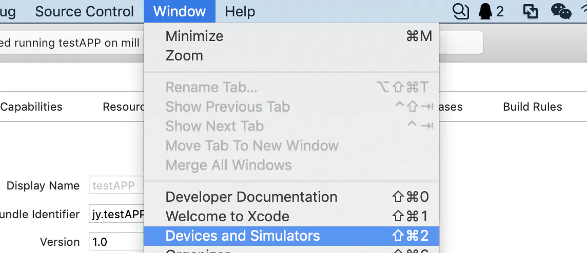
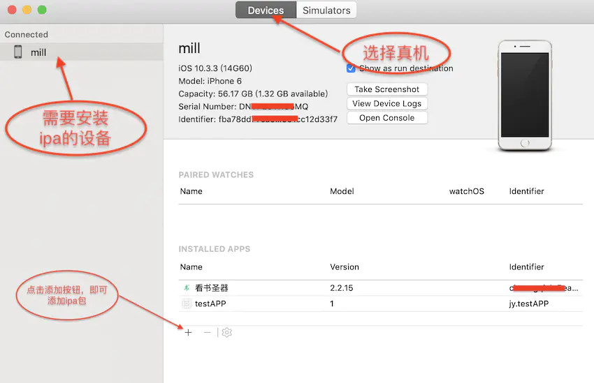

Flutter
AI 导读一分钟导读，先掌握全文主干。
核心观点
- Flutter 跨平台 UI 框架，一套代码跑 iOS/Android/Web/Desktop
- Dart 语言基础 + Widget 树（组合优于继承）的核心思想
- macOS 环境搭建与模拟器运行流程
关键结论与取舍
- 先理解 Widget 即 UI 的声明式模型，再学布局与状态管理
- UI 层用 Flutter，业务逻辑保持平台无关
中文官网
常用命令
# 检查环境
flutter doctor
# 创建新工程
flutter create xxx
# 调试运行
flutter run
# 生成 apk，默认 release；上架应用市场需要签名，个人使用直接生成即可
flutter build apk
# 插上数据线、连上手机、手机打开调试选项后，直接安装
flutter install
# 生成 iOS 应用包：默认 App Store 导出；没有付费开发者账号时只能 development（真机调试），
# 付费账号可指定 ad-hoc（内测）或 enterprise（企业分发）
flutter build ipa
flutter build ipa --export-method development
# Deployment Target（部署目标）需不低于当前 Flutter 版本要求（以发版说明为准），
# 常见坑：Target 设太低时，打包后在低版本 macOS 上报错或无法运行
flutter build macos
# 出现类似下面的提示，可能是 Xcode 版本或 Apple Silicon 造成，仍可正常打包
# --- xcodebuild: WARNING: Using the first of multiple matching destinations:
# { platform:macOS, arch:arm64, id:xxxxx }
# { platform:macOS, arch:x86_64, id:xxxx }
# cd project/build/web
# python3 -m http.server 8000
flutter build web
# linux仅限linux主机支持
flutter build linux
# windows仅限windows主机支持
flutter build windows国内镜像环境变量（否则 flutter doctor 失败）
vim .zshrc
vim .bashrc
export CHROME_EXECUTABLE=/Applications/Chromium.app/Contents/MacOS/Chromium
export PUB_HOSTED_URL=https://pub.flutter-io.cn
export FLUTTER_STORAGE_BASE_URL=https://storage.flutter-io.cn本地跑起flutter官网
cd git-code/github/flutter-website
# make up,如果不能,就先启动docker
./local.sh知名扩展库
-
AppFlowy-开源笔记 （notion 类开源替代，注意前一行 bruno 是贝壳开源的渲染 / 组件库）
Bundle和apk区别
Bundle（Android App Bundle，.aab）是 Google 推出的发布格式：提交 .aab 到 Google Play，Play 根据用户设备在资源、ABI、语言等维度拆分，按需拼装出专属 apk。比如 x86 + xhdpi 设备下载时，Google Play 会基于 .aab 拼装一个只含 xhdpi 资源和 x86 so 库的 ap
xcode无线调试真机(同局域内)
-
手机用数据线连上 Xcode，打开 Xcode 菜单：Windows -> Device and Simulators。找到连上的设备，把 Connect via network 选项打勾。
-
之后 Xcode 会转一会圈圈，耐心等一会就成功了，此时拔掉数据线，可以看到左侧设备连接列表里手机仍在列表中
-
运行项目，在设备列表里不出意外会看到无线连接的手机。选择手机后运行
-
不出意外的话，这时候是跑不起来的。还需要最后一步，回到刚的设备列表中，选中手机右键，在出来的选项卡里选一个 Connect via IP Address 项。选完后输入手机的局域网 IP 地址。
-
完成后可以看到连接的手机右边有一个地球连接标志。
-
以后项目运行时，下拉列表里如果手机在局域网中也会有这个标志
-
最后一步，选好后直接运行，不出意外项目无需数据线就跑起来了
-
这个方法支持无线调试，连过一次后就不需要数据线了
苹果帐户添加设备uuid
-
打开https://developer.apple.com/ 登录苹果开发者账号，只有付费账号才能看到设备管理界面
-
登进去后点击 Certificates, Identifiers & Profiles
-
左侧点击 Devices，可以看到现在账号里注册的设备，再点击 + 号新增设备
-
填写设备名字（这个自己随便写就行，方便你知道是谁的什么设备就好）还有设备的 UDID，完成后点击 Continue
-
然后会让你再次确认信息，看填写是否正确，下面显示的是该账号最多可以添加的测试设备数目和剩余可添加设备数目。信息无误，点击 Register 下一步。再点击 done 完成注册，跳转回 Devices 页面，就能看到新添加的设备了。如果是做 app 开发，需要重新打包后新设备才能测试
-
平时打adhoc，不用打 store 包
-
设备的 UUID（如 0da33645…a845 的格式；切勿在公开文档中贴出真实 UDID）
xcode查看uuid
-
iphone 数据线连接 MAC
-
打开 Xcode
-
点击 Window —-> Devices and Simulators —> 在右侧可查看 identifier
-
identifier 就是我们获取到的 iPhone 的 UDID
总结


Flutter 3.4x 与 GenUI 时代（2024-2026 更新）
版本线（2025-2026）
| 版本 | Dart | 发布/状态 |
|---|---|---|
| 3.29 | 3.7.2 | 2025-04-15 |
| 3.32 | 3.8.1 | 2025-07-26 |
| 3.35 | 3.9.2 | 2025-10-23 |
| 3.38 | 3.10.9 | 2026-02（3.38.10），维稳基线 |
| 3.41 | 3.11.5 | 2026 生产推荐主力（3.41.9 @ 2026-05） |
| 3.44 | 3.12.2 | 最新大版本（3.44.8 @ 2026-07），密集修复中 |
Flutter 3.44 / Dart 3.12 与 Google I/O 2026
- GenUI SDK：官方推出 AI 驱动的 UI 生成 SDK，可以基于自然语言动态生成 Flutter 界面，和 Google DeepMind 技术联动。
- Create with AI：官方强化 AI 创建路径，通过 Firebase 生成式 AI 对接文本、多模态和会话类能力。
- Dart Cloud Functions for Firebase：Dart 后端能力打通，前后端同语言全栈化。
- Impeller 全面深化：渲染和着色器编译持续优化，Web 端渲染向 Impeller 统一迁移。
- 桌面生态升级：Canonical 成为 Flutter 桌面端主要维护者；Material 和 Cupertino 组件库进入解耦演进阶段。
- 落地场景外扩：车载系统（如丰田 RAV4 试点）等嵌入式跨平台场景增多。
Flutter 3.x 基础回顾
- Impeller 渲染引擎：替代 Skia，预先编译着色器，消除卡顿。
- Material 3：全面支持 Material Design 3 设计规范。
- Dart 3：空安全、记录类型（Records）、模式匹配。
// Dart 3 记录类型 var record = ('first', a: 2, b: true, 'last'); print(record.$1); // first print(record.a); // 2 // 模式匹配 switch (status) { case 200: print('OK'); case >= 400 && < 500: print('Client error'); case >= 500: print('Server error'); } - Flutter Web 改进：CanvasKit 渲染器、Wasm 编译支持。
- Widget 状态管理：社区主流 Riverpod / Provider / Bloc。
状态管理方案对比
| 方案 | 复杂度 | 特点 |
|---|---|---|
| Provider | 低 | 官方推荐入门方案 |
| Riverpod | 中 | 编译时安全、可测试 |
| Bloc/Cubit | 高 | 事件驱动、适合大型应用 |
| GetX | 低 | 一站式（路由+状态+依赖） |
| Signal | 低 | 响应式、类似 SolidJS |